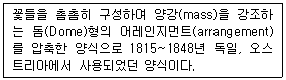
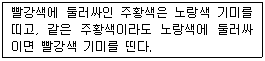

화훼장식기능사 (2007-04-01 기출문제)
1과목: 화훼장식재료
1. 다음 화훼식물의 분류 중 옳지 않은 것은?
- 군자란은 난과식물이다.
- 팔손이 나무는 관엽식물이다.
- 아이리스, 크로커스는 구근류에 속한다.
- 숙근류는 다년생으로 자라는 것을 말한다.
(정답률: 66%)

2. 다음 구근류 중 구경(corm)으로만 묶인 것은?
- 튜립, 칼라, 글라디올러스
- 나리, 원추리, 산마늘
- 글라디올러스, 프리지아, 크로커스
- 꽃생강, 칼라, 수선화
(정답률: 64%)
3. 다음 관엽식물 중 한국자생 식물은?
- 광나무
- 행운목
- 이나나스
- 소철
(정답률: 58%)
4. 다음 중 절엽용 식물로만 묶인 것은?
- 사스레피나무, 무늬둥굴레, 옥잠화
- 작살나무, 층꽃나무, 라일락
- 층꽃나무, 소철, 용담
- 피라칸사. 양치류, 소철
(정답률: 51%)
5. 잎의 구조와 형태에 대한 설명으로 틀린 것은?
- 잎은 광합성작용을 하는 주된 기관이다.
- 잎의 관다발과 이것을 둘러싼 부분을 잎맥이라고 하는데, 잎맥은 잎 속의 물질이 이동하는 부분 이다.
- 잎맥은 보통 주맥, 곁맥, 가는맥으로 구분한다.
- 여러개의 엽신이 깃털 모양으로 배열된 잎을 장상복엽 이라한다.
(정답률: 83%)
6. 다음 중 화훼원예의 주요 특징으로 가장거리가 먼 것은?
- 종류와 품종수가 극히 적은 편이다.
- 고도의 생산기술을 요구한다.
- 문화 생활수준의 향상과 더불어 발전한다.
- 경영상 시설을 이용한 연중 집약재배를 실시한다.
(정답률: 97%)
7. 다음 중 분류학상 백합과에 속하지 않는 식물은?
- 작약
- 은방울꽃
- 엽란
- 참나리
(정답률: 50%)
8. 식물의 영양기관 중에서 줄기의 기능에 관한 설명으로 옳지 않은 것은?
- 줄기는 양분과 수분을 저장한다.
- 체관은 주로 수분의 이동기관이다.
- 식물을 지탱(지지)하게 해 준다.
- 식물의 잎, 꽃, 눈 등을 착생한다.
(정답률: 48%)
9. 다음 중 화훼장식 소재로 줄기 또는 잎을 주로 사용하는 소재가 아닌 것은?
- 접란
- 시네라리아
- 아이비
- 아스피라거스
(정답률: 67%)
10. 다음 중 저온에 가장 강한 초화류는?
- 해바라기
- 프리뮬라
- 샐비어
- 나팔꽃
(정답률: 65%)
11. 다음 중 난과식물의 일종인 호접란이 속하는 속(屬)은?
- 심비디움
- 덴드로비움
- 온시디움
- 팔레놉시스
(정답률: 53%)
12. 다음 중 가을에 씨를 뿌려 봄 화단에 이용하는 한해살이 화초가 아닌 것은?
- 팬지
- 매리골드
- 데이지
- 프리뮬라
(정답률: 52%)
13. 다음 중 주로 매년종자 파종에 의해서 번식하는 것으로 가장 적합한 것은?
- 관엽식물
- 구근류
- 일년초화류
- 숙근초화류
(정답률: 66%)
14. 라벤다, 로즈마리, 레몬밤 등의 식물에 관한 설명으로 옳은 것은?
- 꽃이 아름다운 꽃나무 종류들이다.
- 잎을 주로 감상하는 초본성 화훼이다.
- 향기가 좋은 방향성 식물이다.
- 벌레잡이를 하는 식충식물이다.
(정답률: 97%)
15. 다음 중 붉은 줄기를 소재(素材)로 이용하는 식물로 가장 적당한 것은?
- 서양미역취
- 흰말채나무
- 글라디올러스
- 스토크
(정답률: 78%)
16. 다음 중 늘어지는 부케를 만들기 위해 라인플라워로 이용되는 관엽성의 덩굴식물로 가장 적당한 것은?
- 골드하트아이비
- 사계장미
- 개나리
- 백목련
(정답률: 89%)
17. 디자인의 골격이 되어 선을 구성하거나 윤곽을 잡는데 사용되는 것은?
- 라인 플라워
- 메스 플라워
- 폼 플라워
- 필러 플라워
(정답률: 94%)
18. 다음 중 장일성 식물로 가장 적당한 것은?
- 카네이션
- 칼란코에
- 장미
- 포인세티아
(정답률: 63%)
19. 조선시대 초기에 성행했던 일지화 꽃꽂이 형식을 가장 잘 설명한 것은?
- 병에 한 가지의 꽃을 꽂은 형태
- 넓은 수반에 조화류를 꽂은 형태
- 경사지게 꽂은 산화 형태
- 반월형 삼존 형식으로 꽂는 형태
(정답률: 72%)
20. 다음 중 암수가 딴그루인 자웅이주 식물은?
- 왕벚나무
- 호랑가시나무
- 장미
- 국화
(정답률: 61%)
2과목: 화훼장식 제작 및 유지관리
21. 종교의식을 위한 화훼장식에서 우선적으로 고려되어야 할 것은?
- 대상 종교의 특성과 의식, 전례에 관한 이해
- 대상 종교의식의 집전 건물의 규모
- 대상 종교의식의 집전 공간의 색채
- 대상 종교의식의 집전 공관 마감 재료의 특성
(정답률: 89%)
22. 실내식사용 테이블 장식에 관한설명으로 가장 거리가 먼 것은?
- 일반적으로 중앙테이블 장식에서의 꽃의 높이는 앉은 눈높이 아래로 한다.
- 식욕을 떨어뜨리는 장식용 재료는 사용해서는 안 된다.
- 장소의 특성 및 이용자의 요구사항에 따라 디자인이 달라질 수 있다.
- 플로랄 폼을 덮기 위해 자연 이끼(생이끼)를 이용해서 마무리 한다.
(정답률: 87%)
23. 다음 중 장례용 화훼장식에 속하지 않는 것은?
- 캐스켓 스프레이
- 이젤 스프레이
- 이젤 엠블렘
- 케이크 테이블
(정답률: 88%)
24. 코뉴코피아(cornucopia)의 설명으로 틀린 것은?
- 풍요의 의미를 갖고 있다.
- 원뿔모양의 바구니(화기)이다
- 크리스마스 장식에 어울린다.
- 그리스 로마 신화에서 유래 되었다.
(정답률: 79%)
25. 다음 중 식물 구조 및 식물의 생장과정을 자연스럽게 표현해 주는 자연적 스타일의 조형형태를 가리키는 것은?
- 평행적 스타일
- 보태니컬 스타일
- 정원식 스타일
- 자연장식적 스타일
(정답률: 46%)
26. 다음 중 코사지에 관한설명으로 거리가 먼 것은?
- 사용되는 꽃은 크고 중량감이 있는 것을 이용하여 화려하게 장식한다.
- 신체의 장식뿐만 아니라 모자 등에도 사용한다.
- 이용할 목적이나 대상을 고려하여 제작한다.
- 프랑스어로 상반신을 뜻하는 말로, 여성의 옷이나 몸을 장식하는 작은 꽃다발이다.
(정답률: 91%)
27. 꽃다발 등을 만들 때 철사 대산에 묶는 용도로 이용하거나 장식용으로 쓰이는 자연 소재는?
- 다래덩굴
- 라피아
- 플로랄 테이프
- 방수 테이프
(정답률: 85%)
28. 다음 중 유리용기에 도마뱀, 개구리 거북 등과 식물을 함께 생육시키는 식물장식으로 가장 적당한 것은?
- 아쿠아리움
- 테라리움
- 비바리움
- 디쉬가든
(정답률: 89%)
29. 다음 중 소형 테라리움에 이용할 수 있는 식물로 가장 적당한 것은?
- 아스파라거스
- 파리지옥
- 칼라
- 몬스테라
(정답률: 55%)
30. 다음 중 방사형 구성의 화훼장식으로 가장 적당한 것은?
- 포멀리니어
- 패러렐디자인
- 트라이앵글
- 교차선배열
(정답률: 46%)
31. 꽃의 크기 .모양. 질감에 대하여 다양한 변화를 주기위해 하나의 꽃을 몇 개로 분해하여 다시 조립하는 기법은?
- 번들링
- 펀칭
- 페더링
- 밴딩
(정답률: 73%)
32. 다음 중 식물의 성숙 및 노화를 일으키며, 화학구조가 매우 단순한 식물 호르몬은?
- 옥신
- 지베렐린
- 에틸렌
- ABA
(정답률: 90%)
33. 꽃의 줄기 또는 줄기와 평행으로 꽃머리 등에 와이어를 꽃아 넣어주는 방법으로 줄기가 약하거나 속이비어 있는 상태의 줄기에 사용되는 철사처리법은?
- 헤어핀 메소드
- 훅킹 메소드
- 피어싱 메소드
- 인서센 메소드
(정답률: 77%)
34. 다음 중 배양토에 대한설명으로 틀린 것은?
- 식물생육에 필요한 영양분이 함유 되도록 한다.
- 사용할 식물에 맞게 적정 비율로 경량토들을 혼합해서 사용한다.
- 토양이 무거워야 식물의 뿌리를 잘 눌러 고정할 수 있다.
- 통기성, 보수력, 보비력이 양호하다.
(정답률: 96%)
35. 절화의 물올림을 위한 방법 중 물리적 방법이 아닌 것은?
- 수중절단법
- 탄화법
- 온수침지법
- 지베릴린(GA)처리법
(정답률: 68%)
36. 식물의 일장 반응에 있어 야간 동안에 광을 쬐어주면 긴 밤의 효과가 없어진다. 이 때 야간 동안에 광처리를 해주는 것을 무엇이라고 하는가?(오류 신고가 접수된 문제입니다. 반드시 정답과 해설을 확인하시기 바랍니다.)
- 광중단
- 온탕처리
- 멀칭
- 춘화처
(정답률: 53%)
37. 다음 중 피트모스에 대한 설명으로 옳은 것은?
- 물이끼를 건조시킨 것으로써 물을 저장할 수 있다.
- 보수성이 높고, 공극이 크며 암갈색으로 산성을 띤다.
- 낙엽활엽수의 잎이 완전히 부속된 것이다.
- 고온으로 가열하여 만든 pH7 정도의 중성이다.
(정답률: 52%)
38. 다음 중 토양 수분의 과잉 장해 현상과 관련 내용으로 가장거리가 먼 것은?
- 세포의 비대생장이 억제된다.
- 뿌리의 활력이 떨어진다.
- 식물이 도장한다.
- 토양 내 미생물의 활동이 억제된다.
(정답률: 36%)
39. 식물의 종류, 색 , 질감 등이 오사한 소재들을 같은 방향, 구역에 배열하여 두드러지게 강조되게 하는 꽃꽂이로 소재 각각의 개성을 존중하며 서로 넉넉한 공간을 갖는 표현기법은?
- 프레이밍
- 그루핑
- 레이어링
- 쉐도잉
(정답률: 69%)
40. 동양식 꽃꽂이에서 제 1주지의 길이는 화기의 길이(가로) 와 높이(세로)를 더한 길이의 몇 배가 적당한가?
- 1배
- 1.5~2배
- 2.5~3배
- 상관없다.
(정답률: 92%)
3과목: 화훼장식론
41. 건조소재로서 포프리(potpourri)의 설명으로 가장 거리가 먼 것은?
- 병속에 향기를 가꾼다는 의미 이다.
- 꽃, 잎, 열매 등에서 자연적으로 향기가 나는 식물을 지칭한다.
- 용기, 주머니 등 다양한 형태로 장식되며 방향요법에 사용된다.
- 이집트시대 시체의 부패를 방지하기 위해 사용되었다.
(정답률: 40%)
42. 꽃의 건조 방법에 대한 설명으로 틀린 것은?
- 열풍건조는 열풍건조기를 이용하여 많은 건조화를 생산 하며, 빠르게 건조시키면서 변색이 적고 형태유지가 가능하다
- 동결건조는 형태와 색상이 그대로 유지되고, 공기 중에서 수분흡수가 적어 밀폐되지 않은 공간장식에 많이 이용된다.
- 실리카겔을 이용한 매물건조는 형태와 색상변화가 적으나 공기 중 수분을 쉽게 흡수하므로 밀폐공간이나 피막 처리하여 장식해야 한다.
- 누름건조를 이용한 건조화를 누름 꽃이라 하고, 밀폐용 액자와 평면장식에 이용된다.
(정답률: 68%)
43. 고전적형태의 하나로 양끝이서로 이어지려는 느낌으로, 곡선과 공간의 균형이 아름다워 동적인 느낌을 주는 디자인은?
- 나선형
- 초승달형
- 수직형
- 둥근형
(정답률: 88%)
44. 일본의 화훼장식에 대한 설명을 옳은 것은?
- 전위화 양식에서 입화양식으로 발전 되었다.
- 불전공화 양식에서 기원 하였다.
- 분재의 형식을 도입한 것을 입회양식이라 칭한다.
- 생화양식은 사각형의 구도이다.
(정답률: 59%)
45. 조선시대 강희안이 지은 대표적은 원예서적은?
- 조선왕조실록
- 양화소록
- 산림경제
- 임원십육지
(정답률: 86%)
46. 가법혼색(additive clolr mixture)의 삼원색에 속하는 색이 아닌 것은?
- 노랑색
- 파랑색
- 빨강색
- 녹색
(정답률: 61%)
47. 물체의 형태를 더욱 강하게 표한하며, 면적은 없지만 방향이 있으며, 방향에나 감정을 표현할 수 있는 요소는?
- 점
- 선
- 면
- 명암
(정답률: 89%)
48. 다음 중 화훼장식을 바르게 설명한 것은?
- 실외 공간의 기능과 미적 효율성을 높여주는 장식물을 제작하는 것을 말한다.
- 절화장식에는 꽃꽂이, 갈란드, 포푸리, 행잉바스켓, 테라리움, 화한, 건조화 등이 해당 된다
- 분식물은 절화와 같이 일시적으로 이용될 때 주로 사용 한다.
- 주 소재인 화훼식물은 관상을 대상으로 하는 초본 식물과 목본식물을 총칭한다.
(정답률: 69%)
49. 삼국시대의 꽃꽂이에 관한기록으로 옳지 않은 것은?
- 강서대묘 현실북벽의 비천상
- 해인사 대적광전 벽화
- 무용총의 벽화
- 안악2호분동벽의 비천상
(정답률: 46%)
50. 일반적인 동양과서양의 전통 화훼장식의 작품비교가 바르게 된 것은?
- 동양은 정신적 수양을 강조하고, 서양은 생활공간장식 의 실용성을 강조한다.
- 동양은 꽃의 색과 모양을 강조하고, 서양은 선과 여백 을 강조한다.
- 동양의 주재료는 꽃이고, 서양은 나뭇가지가 주재료가 된다.
- 동양은 기하학적인 이론을 이해하고, 서양은 정신적인 요소를 이해해야 한다.
(정답률: 86%)
51. 영국 조지아 시대(AD1714~1760)에 꽃의 향기가 전염병을 예방해 주는 것으로 인식되어 손에 들고 다녔던 것은?
- 포푸리
- 코사지
- 노즈게이
- 갈란드
(정답률: 84%)
52. 분식물은 기본적으로 용기와 토양. 식물, 첨경물로 구성되는데 다음 중 디쉬가든 장식에 적합하지 않은 것은?
- 접시처럼 넓고 얕은 용기
- 키가 작은 식물
- 생육속도가 빠른 식물
- 뿌리가 깊게 뻗지 않은 식물
(정답률: 89%)
53. 아래 설명이 의미하는 양식은?

- 비더마이어
- 플레미시
- 핸드타이드
- 보태니컬
(정답률: 82%)
54. 신부부케 제작에 필요한 테크닉적인 조건으로 틀린 것은?
- 오래 들어도 피로하지 않도록 적당한 무게로 마무리 한다.
- 시각상의 중심이 되는 꽃은 제일 작은 꽃으로 선택 한다.
- 손잡이의 각도, 길이, 두께에 유의해야 한다.
- 결혼식이 끝날 때 까지 싱싱하고, 흐트러짐이 없도록 마무리처리를 잘 해야 한다.
(정답률: 94%)
55. 화훼장식에서 통일감의 표현을 위해 사용하는 방법으로 가장 거리가 먼 것은?
- 근접
- 연속
- 반복
- 강조
(정답률: 79%)
56. 화훼장식에 영향을 미친 미술양식의 연대순을 옳은 것은?
- 바로크 → 비잔틴 → 로코코 → 로맨틱
- 비잔틴 → 르네상스 → 바로크 → 로코코
- 고딕 → 비잔틴 → 로코코 → 르네상스
- 비잔틴 → 르네상스 → 로코코 → 바로크
(정답률: 59%)
57. 다음아래 설명이 의미하는 것은?

- 색상대비
- 보색대비
- 명도대비
- 계시대비
(정답률: 60%)
58. 먼셀(Munsell)의 색입체의 기본모형이다. A, B, C 축이 각 각 의미하는 것은?
- A : 색상 B: 명도 C : 채도
- A : 명도 B: 색상 C : 채도
- A : 채도 B: 명도 C : 색상
- A : 명도 B: 채도 C : 색상
(정답률: 24%)
59. 우리나라와 같은 동양권에서 방위를 표시할 때 음양오행설 에 따른 오방색으로 표현했을 때 그 연결이 옳은 것은?
- 적(赤) - 북쪽
- 청(靑) - 서쪽
- 황(黃) - 중앙
- 흑(黑) - 남쪽
(정답률: 78%)
60. 다음 중 먼셀의 색표기법에서 “5Y8/10”의의미로 적합한 것은?
- 명도는 5Y, 색상이 8, 채도는 10이라는 색을 나타낸다.
- 색상는 5Y, 채도이 8, 명도는 10이라는 색을 나타낸다.
- 채도는 5Y, 명도이 8, 색상는 10이라는 색을 나타낸다.
- 색상는 5Y, 명도이 8, 채도는 10이라는 색을 나타낸다.
(정답률: 75%)